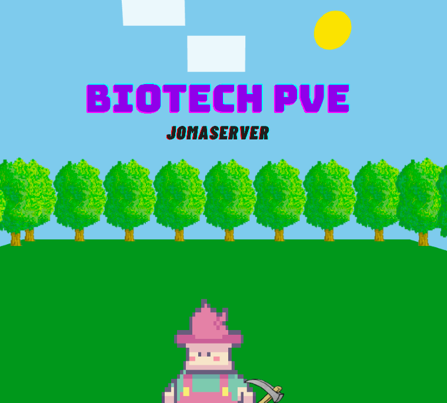

Introdução
Desde segunda, venho trabalhando em um pequeno projeto usando Three.js para criar a abertura do meu canal(sim eu vou criar um canal) é pra uma materia que estou fazendo na faculdade (introdução a divulgação cientifica) o nome vai ser Biotech PvE. A ideia é desenvolver uma animação que represente a progressão científica, começando com um fazendeiro rudimentar e evoluindo até um ambiente mais tecnológico.
Objetivo do Projeto
A animação será utilizada na abertura dos vídeos do canal Biotech PvE, como já comentei, a proposta é trazer divulgação científica de forma acessível, divertida e cheia de referências à cultura pop e à tecnologia.
A ideia central da abertura é mostrar um fazendeiro simples que, aos poucos, avança tecnologicamente, até que ele se torna tão avançado que “sai” da tela e revela o logo do canal.
Softwares Utilizados
Para desenvolver essa animação, estou utilizando as seguintes ferramentas:
Three.js → Para renderizar e animar os elementos em 3D na web.
Blender → Para criar e preparar modelos 3D e texturas.
JavaScript + HTML/CSS → Para estruturar e interagir com a página.
GitHub Pages → Para hospedar e exibir a animação online.O código completo pode ser encontrado no meu repositório:
Desenvolvimento da Animação
A animação foi montada utilizando Three.js para controlar os elementos visuais. Aqui estão algumas das principais mecânicas:
Modelagem e texturas: Utilizei algumas texturas personalizadas, e outras já prontas para representar o fazendeiro, as ferramentas e o ambiente.
Movimentação: O personagem pode se movimentar para os lados e pra frente numa noção de plano bem legal
Efeitos visuais: Fumaça, nuvens e animações suaves dão mais vida à cena. (foi chato fazer isso)
Ainda estou aprimorando detalhes e pensando em adicionar mais efeitos para deixar a transição mais fluida.
Binds
Movimentação do fazendeiro - WASD
Enxada - H
Plantar - E
Proveta - P
Gota no chão - L
Livro - B
Ideia - I
Jetpack - J
Transição de cena - F (precisa estar com o jetpack)
Publicação Online
Para que qualquer pessoa possa visualizar o projeto, usei GitHub Pages para hospedar a animação. Se quiser ver o resultado final, acesse: